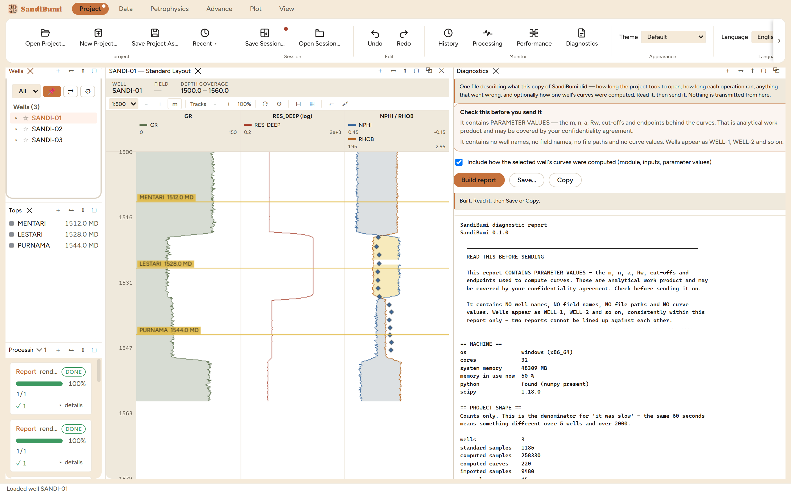

Diagnostics (Project ▸ Diagnostics) builds the one file
to send when something must be reported from a machine you cannot see:
"it was slow", "the numbers look wrong", "it closed by itself". It is
not telemetry – nothing runs in the background and nothing is
transmitted; the pane's own first line ends "Read it, then send it.
Nothing is transmitted from here." Reach for it when reporting a
problem, and read it yourself first – that reading is a designed
step, not a courtesy.
The pane

The built report, shown in full before anything is saved.
The caution card above the buttons repeats the two facts that decide
whether it may travel: parameter values are in it; client names are
not.
What travels is the shipped vocabulary. Module ids, curve
mnemonics, job kinds, durations, error text – the material a
diagnosis is made of.
What is masked is the client's. The report states its own
rule:
It contains NO well names, NO field names, NO file paths and NO curve values. Wells
appear as WELL-1, WELL-2 and so on, consistently within this report only - two reports
cannot be lined up against each other.
Parameter values travel on purpose. Without m, n, a, Rw and
the cutoffs there is usually no way to say why a number looks wrong
– so they are included, and the report says so at the top in a
box you cannot miss, because they are analytical work product that
may fall under a confidentiality agreement.
Step by step
Open Project ▸ Diagnostics, optionally tick "Include
how the selected well's curves were computed" for the per-curve
provenance section, and press Build report.
Read it. The pane shows the whole file – just over a
million characters on the example project – before any save.
Save… to a file, or Copy straight into a
message.
Reading the result
The example report opens with the caution box, then answers a support
conversation in order: MACHINE (32 cores, 48 GB, Python found with
numpy, scipy 1.18.0 – whether the optional stack exists is half of
many mysteries), PROJECT SHAPE (3 wells, 258,330 computed samples, 220
computed curves, 45 core plugs, 16 pictures – the denominator that
decides whether a minute is slow), OPENING timings per migration step,
OPERATIONS THIS SESSION (each import, run and render with its duration
and outcome – the example's tops import took 49 ms), CRASHES
AND INTERNAL ERRORS read back from the previous launches' crash log, and
optionally HOW THESE CURVES WERE MADE for one well. The wells throughout
read WELL-1, WELL-2 – the mapping is built from the project's own
well list, applied longest-name-first, and never stored.
QC and pitfalls
The masking is exact, not clever. It replaces the project's
actual well and field names; it does not pattern-guess. Free text you
typed yourself – a custody source line, a set name, a plate
caption – travels as typed, and on the example a run-source
citation that mentioned the field's name survived verbatim. That is
what the read-before-send step is for.
Parameter values are the report's payload and its risk. If
the recipient must not see the calibration, do not send the file
– there is no switch that strips the parameters and leaves
anything worth diagnosing.
Two reports cannot be joined. The WELL-n mapping is rebuilt
per report, so numbers cannot be correlated across two files –
include everything relevant in one build rather than sending a
series.